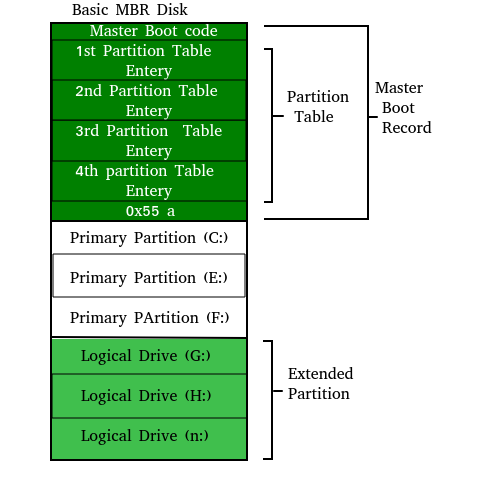

A computer without a program running is just an inert hunk of electronics. The first thing a computer has to do when it is turned on is start up a special program called an operating system. The operating system’s job is to help other computer programs to work by handling the messy details of controlling the computer’s hardware.
An overview of the boot process

The boot process is something that happens every time you turn your computer on. You don’t really see it, because it happens so fast. You press the power button come back a few minutes later and Windows XP, or Windows Vista, or whatever Operating System you use is all loaded.
The BIOS chip tells it to look in a fixed place, usually on the lowest-numbered hard disk (the boot disk) for a special program called a boot loader (under Linux the boot loader is called Grub or LILO). The boot loader is pulled into memory and started. The boot loader’s job is to start the real operating system.
Functions of BIOS
POST (Power On Self Test) The Power On Self Test happens each time you turn your computer on. It sounds complicated and thats because it kind of is. Your computer does so much when its turned on and this is just part of that.
It initializes the various hardware devices. It is an important process so as to ensure that all the devices operate smoothly without any conflicts. BIOSes following ACPI create tables describing the devices in the computer.
The POST first checks the bios and then tests the CMOS RAM. If there is no problems with this then POST continues to check the CPU, hardware devices such as the Video Card, the secondary storage devices such as the Hard Drive, Floppy Drives, Zip Drive or CD/DVD Drives.If some errors found then an error message is displayed on screen or a number of beeps are heard. These beeps are known as POST beep codes.
Master Boot Record
The Master Boot Record (MBR) is a small program that starts when the computer is booting, in order to find the operating system (eg. Windows XP). This complicated process (called the Boot Process) starts with the POST (Power On Self Test) and ends when the Bios searches for the MBR on the Hard Drive, which is generally located in the first sector, first head, first cylinder (cylinder 0, head 0, sector 1).
A typical structure looks like:

The bootstrap loader is stored in the master boot record (MBR) on the computer’s hard drive. When the computer is turned on or restarted, it first performs the power-on self-test, also known as POST. If the POST is successful and no issues are found, the bootstrap loader will load the operating system for the computer into memory. The computer will then be able to quickly access, load, and run the operating system.
init
init is the last step of the kernel boot sequence. It looks for the file /etc/inittab to see if there is an entry for initdefault. It is used to determine initial run-level of the system. A run-level is used to decide the initial state of the operating system.
Some of the run levels are:
Level
The above design of init is called SysV- pronounced as System five. Several other implementations of init have been written now. Some of the popular implementatios are systemd and upstart. Upstart is being used by ubuntu since 2006. More details of the upstart can be found here.
The next step of init is to start up various daemons that support networking and other services. X server daemon is one of the most important daemon. It manages display, keyboard, and mouse. When X server daemon is started you see a Graphical Interface and a login screen is displayed.
References :
http://www.tldp.org/HOWTO/Unix-and-Internet-Fundamentals-HOWTO/bootup.html
https://www.computerhope.com/jargon/b/bootload.htm
http://www.dewassoc.com/kbase/hard_drives/master_boot_record.htm